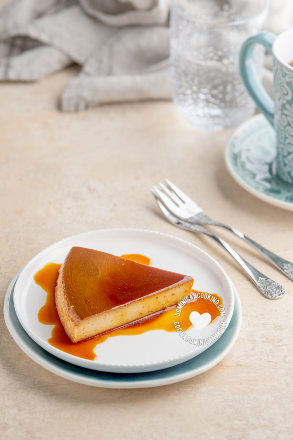

flan de leche
El flan es un postre muy popular heredado de los españoles y común en toda América Latina que también merecía
estar en nuestra colección.

ingrediente
Para el caramelo
- ½ tazas azúcar
- 1 cucharada agua, (ver notas)
Para el flan
- 4 yemas de huevos, grandes (o 5 medianas)
- 1 ⅓ tazas leche condensada
- 1 ⅓ tazas leche evaporada
- 1 cucharadita extracto de vainilla
PASO DE LA RECETA
- 1. Preparar el caramelo
- 2. Hacer la mezcla para flan
- 3. Hornear
- 4. Servir
Esta receta fue copiada de la pagina https://www.cocinadominicana.com/flandeleche